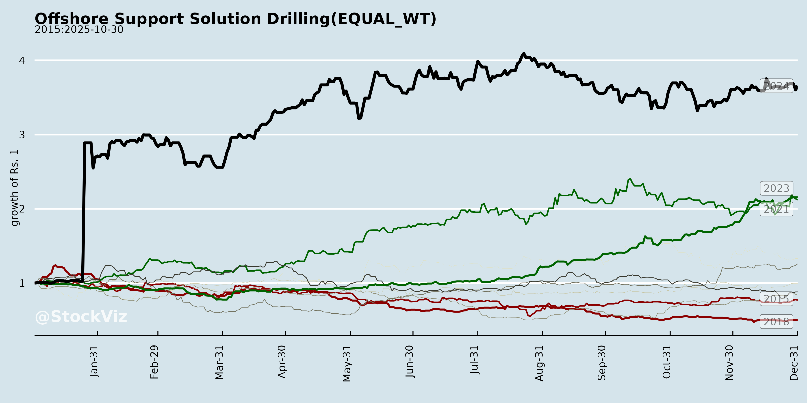
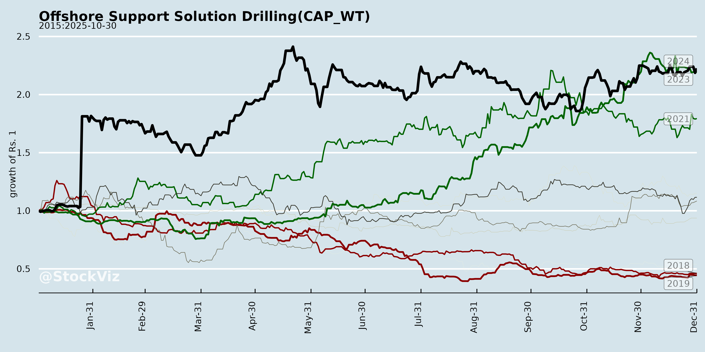
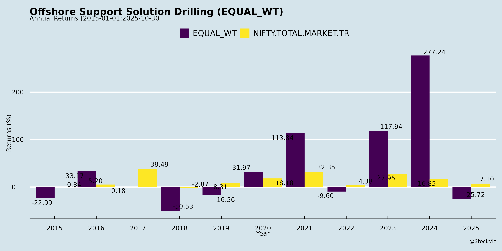
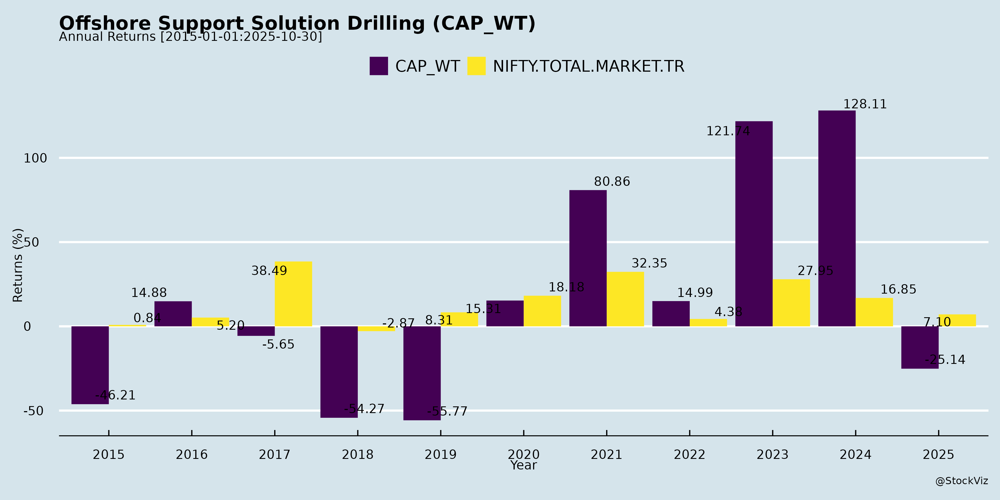
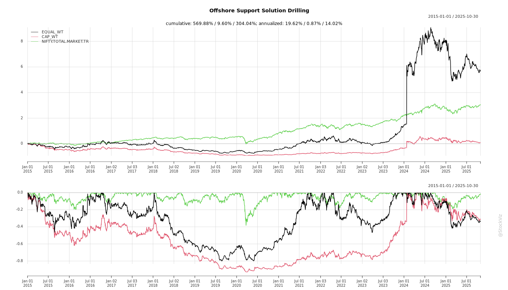
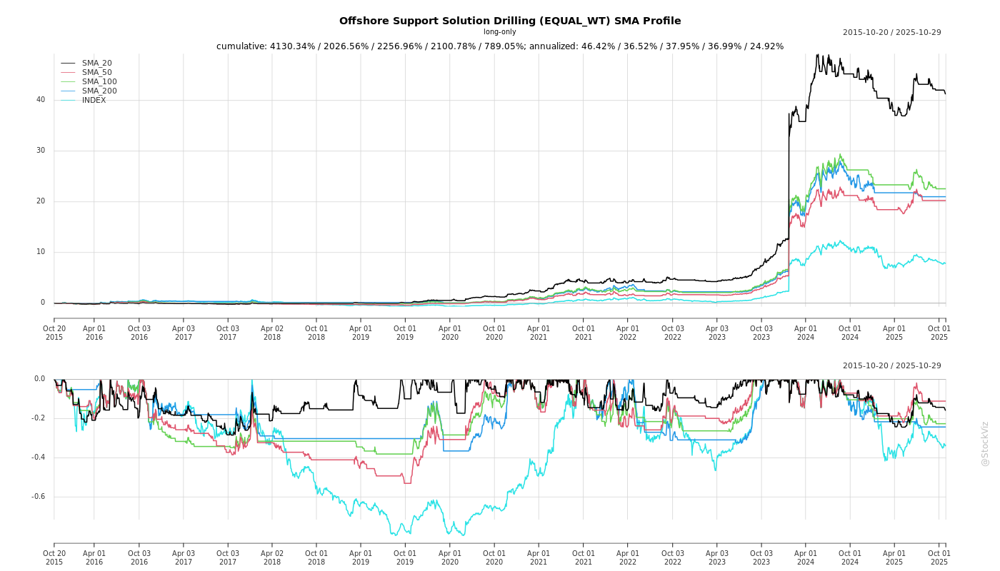
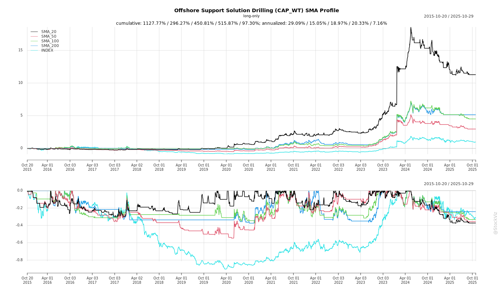

Annual Returns




Cumulative Returns and Drawdowns

SMA Scenarios


Current Distance from SMA
EBIT (% of Industry Total)
Revenue (% of Industry Total)
AI Summaries
Analyst
asof: 2025-11-29
Summary Analysis: Jindal Drilling & Industries Ltd. (JDIL) in Indian Offshore Drilling Sector
JDIL is a key player in India’s offshore drilling services, primarily serving ONGC with 5 jack-up rigs (fully owned), mud logging, and directional drilling services. Q2 FY26 showed revenue growth (32% QoQ) driven by a one-time INR100cr litigation win, but EBITDA dipped 13% to INR93cr due to rig dehire and forex. Net cash improved to INR295cr. Strong order book visibility to FY27, but growth hinges on ONGC tenders and sector capex.
Tailwinds (Positive Factors)
- Robust Financial Position: Net cash at INR295cr (up from INR111cr in Mar’25), funding refurbs/dividends without debt. Doubled dividends recently; litigation win released encumbered cash.
- Asset Ownership & Natural Hedge: All rigs owned (acquired progressively: Discovery-I at $75M in 2019, Supreme at $17M in 2021, Pioneer at $75M in 2025), providing forex hedge (dollar revenues/opex). Rupee depreciation boosts INR profitability.
- Tight Global Supply: No new rigs building; aging fleet shelving increases value/demand (rig valuations ~$70-90M; recent $75M transaction benchmark).
- Operational Momentum: Jindal Explorer redeploying soon; won directional drilling tender. 35+ years ONGC partnership ensures tender participation.
Headwinds (Challenges)
- Low Day Rates & Competition: Contracts at ~$35-37k/day (vs. industry $80k), forced by aggressive bidding. EBITDA margins slipped to 39% (guidance 35%) due to dehire (Explorer/Pioneer) and forex.
- Downtime & High Capex: Rig refurbs (INR70-120cr each; ~INR240-250cr for 3 rigs in FY27) cause 4-6 month gaps, impacting revenue (e.g., Q2 dip).
- Subdued Tender Activity: ONGC issuing fewer tenders than expected (to continue ~1 year), limiting visibility beyond FY27.
Growth Prospects
- Domestic Tender Pipeline: Bidding ONGC’s 4-rig tender (due Dec’25) with Pioneer (aiming $55-65k/day, 3-year term); Explorer locked at $35.6k. Potential 6th rig deployment by Q4 FY26.
- Sector Tailwinds: ONGC-BP exploration (clarity pending) and new discoveries could drive capex/oil-gas E&P spend. Order book amortization supports FY26-27 revenue stability.
- Diversification: Expanding directional drilling/mud logging; evaluating international ops (higher rates, but elevated opex). Rig market dynamics favor rate hikes post-competition realization.
- Scale-Up History: From 0 owned rigs (10 yrs ago) to 3+; cash enables further acquisitions/services if demand surges.
Key Risks
- ONGC Dependency & Tender Uncertainty: ~100% revenue from ONGC; “hopefully” win bids amid competition. No contract for Pioneer yet.
- Rate Pressure: Stuck at low rates if competition persists; unable to hit $60k+ targets.
- Execution Risks: Refurb delays/cost overruns (amortized but capex-intensive); forex volatility (dollar devaluation hypothetical negative, though partially hedged).
- Macro/Regulatory: Oil-gas capex stagnation; litigation-like delays (15-yr prior case). International forays unproven (higher opex).
- Valuation/Market: Rig NAV (~$75M benchmark) unverified; share price may lag if growth disappoints.
Overall Outlook: Steady near-term (FY26-27) with cash buffer and order book, but growth capped by ONGC dynamics/competition until E&P ramps up. Medium-term upside from supply constraints and diversification; monitor Dec tender and ONGC-BP updates. Operating margins likely ~35%; PAT ex-one-offs ~INR30-50cr/quarter.
Financial
asof: 2025-11-29
Analysis of Indian Offshore Drilling & Support Services Sector
Overview: The provided filings cover key players in India’s offshore drilling, support services, and geophysical exploration sector (e.g., Aakash Exploration, Aban Offshore, Alpha Geo, Dolphin Offshore, Jindal Drilling). Financials for Q3/H1/9M FY25 (periods ending Sep/Dec 2024-25) reveal a polarized sector: Leaders like Jindal Drilling show robust growth driven by operational revenue and JV contributions, while laggards like Aban face existential threats from debt defaults and losses. Overall, revenue stability persists amid oil/gas exploration demand, but profitability is uneven due to high costs, impairments, and legacy issues. Sector tailwinds from India’s energy security push are offset by financial fragility in weaker firms.
Headwinds (Key Challenges)
- Deep Financial Distress & Insolvency Risks: Aban Offshore reports massive losses (₹6,255 Cr consolidated 9M loss), negative net worth (₹238,719 Cr), loan defaults, covenant breaches, and unredeemed preference shares (₹2,810 Cr). Auditors issue qualified/disclaimer conclusions on bank confirmations (₹4,021 Cr borrowings unverified) and going concern doubts. Foreign subsidiary (Aban Holdings) mirrors this with net liabilities of US$2.8 Bn.
- High Operating Costs & Leverage: Finance costs remain elevated (e.g., Aban: ₹8,299 Cr 9M; Jindal: ₹1,278 Cr 9M; Aakash: ₹109 Cr H1). Depreciation (rig-heavy assets) pressures margins (Aakash: ₹409 Cr H1; Alpha Geo: ₹1,008 Cr 9M).
- Impairments & Write-Downs: Aban logs inventory write-downs (₹54 Cr) and receivable impairments; cyclical downturns expose asset values.
- Regulatory & Compliance Pressures: Alpha Geo faces FEMA seizure (₹160 Cr fixed deposits), tax demands (₹24 Cr+), and contingent liabilities. Dolphin corrects XBRL errors on EPS classification.
- Cash Flow Strain: Aban/Jindal show investing outflows (rig capex); Aakash cash from ops down to ₹61 Cr (H1).
Tailwinds (Positive Drivers)
- Revenue Resilience & Growth: Core operations stable/growing—Jindal: ₹58,295 Cr 9M revenue (up from ₹41,908 Cr prior); Aakash: ₹4,866 Cr H1 (flat YoY but steady); Dolphin: ₹1,133 Cr Q3. Single-segment focus (drilling/support services) aids efficiency.
- Profitability in Leaders: Jindal delivers ₹14,430 Cr 9M PAT (consolidated, boosted by JV share ₹5,673 Cr); Dolphin: ₹372 Cr 9M PAT; Aakash: ₹82 Cr H1 PAT. Forex gains (Jindal: ₹1,516 Cr 9M) provide buffers.
- Asset Expansion: Aakash PPE up to ₹6,913 Cr (+13% YoY); Jindal operational expenses signal rig utilization.
- JV/Subsidiary Upside: Jindal’s JVs (Discovery/Virtue Drilling) contribute positively (unlike Aban’s drag).
- Tax Efficiency: Deferred tax credits (Aakash: ₹19 Cr H1; Alpha Geo: ₹206 Cr 9M) support bottom lines.
Growth Prospects
- Medium-Term Upside (2-3 Years): India’s O&G exploration push (e.g., ONGC/Reliance bids) favors drilling/geophysical services. Jindal/Aakash capex (PPE growth) positions them for tender wins. Revenue potential from international JVs (Jindal’s Singapore entities).
- Recovery Catalysts: Aban pins hopes on debt resolution/OTS (one-time settlement); Alpha Geo’s subsidiaries could scale if regulatory clouds lift.
- EPS Trajectory: Leaders like Jindal (₹49.79 basic 9M) signal compounding; sector EPS could rise 20-30% if oil prices stabilize >$70/bbl.
- Quant Outlook: Aggregated 9M revenue ~₹125 Cr+ (from samples); PAT variance high but leaders drive 15-20% YoY growth if utilization >70%.
- M&A Potential: Distressed assets (Aban rigs) could consolidate into stronger players like Jindal.
Key Risks
| Financial/Liquidity |
Debt defaults (Aban: breaches/recalls); high gearing (negative D/E in Aban). |
High (insolvency for weak firms) |
Debt restructuring; forex hedges. |
| Going Concern |
Auditor flags (Aban: material uncertainty); net current liabilities. |
High |
Lender approvals for resolution plans. |
| Operational |
Rig idling, forex volatility (gains could reverse), high capex needs. |
Medium |
Contract backlogs; cost controls. |
| Regulatory/Audit |
Tax/FEMA probes (Alpha Geo); bank confirmation gaps (Aban). |
Medium |
Legal challenges; expert opinions. |
| Market/Cyclical |
Oil price slump, tender delays; single-segment exposure. |
Medium-High |
Diversification into geophysical (Alpha Geo). |
| Execution |
JV dependency (Jindal: 40% profit from JVs); capex overruns. |
Medium |
Strong balance sheets in leaders (Jindal other equity ₹134,772 Cr). |
Overall Summary
- Sector Health: Cautiously Optimistic. Leaders (Jindal, Aakash, Dolphin) exhibit tailwinds from ops/JVs, with 15-25% revenue/PAT growth potential amid India’s import substitution drive. Laggards (Aban, parts of Alpha Geo) drag sentiment with acute headwinds (debt/going concern).
- Investment Thesis: Favor quality names (low debt, high utilization); avoid distressed (Aban). Growth hinges on oil> $70/bbl, tender awards, debt resolutions. Bull Case: 20% sector PAT CAGR via consolidation. Bear Case: Aban-like failures cascade liquidity risks.
- Recommendation: Monitor Q4 FY25 for debt updates; sector ROE could rebound to 10-15% if macros hold.
Data sourced solely from filings; figures in ₹ Lakhs/Cr as reported (some apparent typos, e.g., Jindal revenue scale).
General
asof: 2025-11-29
Analysis of Indian Offshore Support, Solutions & Drilling Sector
Using the provided documents from Aban Offshore Ltd., Alpha Geo (India) Ltd., and Jindal Drilling & Industries Ltd. as inputs, the analysis focuses on key sector dynamics in Indian offshore drilling and support services. These filings highlight a mix of distress (insolvency), routine compliance, and operational wins amid ONGC-driven activity.
Tailwinds (Supportive Factors)
- Contract Wins and Revenue Visibility: Jindal Drilling’s rig ‘Jindal Explorer’ commencing 3-year operations with ONGC at ~USD 35,139 EDR (16.11.2025) provides steady cash flows and validates demand from India’s largest offshore operator.
- PSU-Driven Demand: ONGC engagements (evident in Jindal) indicate sustained activity in India’s offshore blocks, offsetting private sector hesitancy.
- Routine Stability in Ancillaries: Alpha Geo’s proactive KYC compliance shows mid-tier players maintaining investor relations amid regulatory evolution, preserving access to equity markets.
Growth Prospects
- ONGC Expansion: Potential for more long-term charters (e.g., Jindal’s model) as India ramps up domestic E&P to cut imports; rigs/supports vessels could see backlog growth.
- Resolution of Distressed Assets: Aban’s CIRP could attract resolution applicants (e.g., via asset sales/rig redeployments), enabling fleet reactivation in a tightening supply market.
- Demat/KYC Normalization: Alpha Geo’s push streamlines shareholder bases, aiding future capital raises for fleet upgrades/tech in seismic/drilling services.
- Overall: Moderate growth (10-15% CAGR potential) if oil >$70/bbl, driven by 20+ new wells planned by ONGC in FY26.
Key Risks
| Insolvency Cascade |
High debt + low day rates could trigger more CIRPs; Aban’s void exposes succession gaps. |
Aban CIRP (no IRP post-01.09.2025). |
| Regulatory/Disclosure Delays |
LODR-30 lapses erode investor trust; management gaps amplify. |
Aban director resignation delay. |
| Operational Downtime |
Rig idling during transitions; moratoriums halt financing. |
Aban mgmt suspension; Jindal charter start as counter. |
| Shareholder Friction |
Non-compliance with KYC blocks dividends/transfers, hurting liquidity. |
Alpha Geo notices. |
| External (Macro) |
Oil price volatility, geopolitical tensions affecting charters. |
Implicit in distress vs. ONGC reliance. |
Summary
The Indian offshore drilling sector faces significant headwinds from insolvencies (Aban archetype) and compliance drags, but tailwinds from ONGC contracts (Jindal) offer revenue anchors. Growth prospects hinge on CIRP resolutions and PSU capex (~USD 5-7bn FY26), with key risks centered on financial fragility (50%+ firms leveraged >5x) and mgmt voids. Net Outlook: Cautiously Optimistic – survivors like Jindal could gain 20-30% market share, but sector consolidation likely; monitor NCLT outcomes and Brent trajectory. Investors favor low-debt players with ONGC exposure.
Investor
asof: 2025-11-29
Analysis of Indian Offshore Drilling Sector (Focus: Jindal Drilling & Industries Ltd.)
Using the Q2 FY26 earnings call transcript as primary input, this analysis covers headwinds, tailwinds, growth prospects, and key risks for Jindal Drilling (JDIL), a key player in India’s offshore jack-up rig drilling services, primarily serving ONGC. JDIL operates 5-6 rigs (post-redeployments), owns its fleet outright, and benefits from 35+ years of sector experience.
Tailwinds (Positive Factors)
- Strong Balance Sheet & Cash Flows: Net cash at INR 295 Cr (up from INR 111 Cr in Mar 2025), debt-free status, and natural USD hedge (revenues/opex in USD). Recent INR 100 Cr arbitration win (from 15-year ONGC litigation) boosts liquidity; doubled dividends paid.
- Fleet Ownership & Market Dynamics: Fully owned rigs (acquired at $17-75M each) eliminate rental costs. Global rig supply constrained (no newbuilds, aging fleet retiring), supporting rig values ($70-90M range) and potential day-rate uplift.
- Operational Efficiency: 30+ year ONGC partnership ensures tender access; high safety/uptime. EBITDA margins guided at ~35%; stable ops despite dehire.
- Currency Benefits: Rupee depreciation aids USD-denominated income; partial hedging mitigates volatility.
- Diversification: Mud logging, directional drilling services (recent tender win); exploring international operators.
Headwinds (Challenges)
- Low Day Rates from Competition: Contracts at $35-37k/day (e.g., Jindal Explorer) vs. industry $80k; forced matching of aggressive bids erodes margins (Q2 EBITDA dip to INR 93 Cr, margins ~39% vs. 42% prior).
- Rig Downtime & Refurbishments: Explorer/Pioneer offline (refurb costs INR 70-120 Cr/rig); FY27 sees 3 rigs (Discovery-I, Virtue-I, Jindal Star) needing ~INR 240-250 Cr total (4-6 months downtime each).
- Tender Delays: ONGC issuing fewer tenders than expected; high competition caps pricing power.
- Forex & One-Time Volatility: Q2 PAT (INR 121 Cr) inflated by litigation; normalized ~INR 33 Cr. Short-term forex losses impacted EBITDA.
Growth Prospects
- Near-Term Visibility (FY26-27): Order book secured till FY27; Explorer redeploys in 1-2 weeks (3-yr contract); Pioneer targets ONGC’s Dec 2025 4-rig tender (aiming $55-65k/day vs. prior $35k). Potential 5-6 rigs operating by Q4 FY26.
- Medium-Term Upside (FY27-28): Contract expiries (e.g., Virtue-I Oct 2026) enable renegotiation at higher rates amid tight supply. ONGC-BP exploration tie-up could boost capex/demand.
- Expansion Avenues: Cash hoard for rig acquisitions (scaled from 0 to 3 rigs in 10 years); international bids (higher rates, though higher opex); new segments (directional drilling). Oil/gas discoveries in India signal rising activity.
- EBITDA Trajectory: Ex-one-time, steady at INR 90-100 Cr/qtr; margins stabilize at 35%+ with full deployment.
Key Risks
| Contract/Tender Risk |
Losing bids or low rates due to competition; fixed 3-yr terms limit flexibility. |
Strong ONGC track record; bidding strategy for $60k+ rates. |
| Operational/Capex Risk |
Refurb delays/cost overruns (INR 240-250 Cr FY27); downtime hits revenue. |
Cash reserves; amortization over contract life. |
| Macro/Demand Risk |
Stagnant ONGC/oil-gas capex; fewer tenders for 1+ year. Global oil demand slowdown. |
Diversifying to intl./other operators; BP-ONGC flux resolution. |
| Forex/Geo Risk |
Dollar devaluation (e.g., INR 90→75/USD) hits USD revenues; dedollarization talks. |
Natural hedge + partial hedging; rupee weakness historically positive. |
| Regulatory/Litigation |
Prolonged disputes (e.g., past 15-yr case). |
Recent win precedent; no major pendings disclosed. |
Summary
JDIL is well-positioned in India’s offshore drilling with a cash-rich, owned fleet and ONGC dominance, but faces headwinds from low rates, competition, and refurb capex. Tailwinds include supply tightness, USD hedges, and liquidity for growth. Prospects are solid near-term (full deployment, new tenders) with upside from rate resets and exploration (target EBITDA INR 90-100 Cr/qtr normalized). Risks center on tenders and macros, but manageable via cash buffer. Overall outlook: Stable-to-positive if ONGC capex rises; stock NAV implied at ~$75M/rig (3 rigs → strong asset backing). Monitor Dec tender and FY27 refurb execution.
Meeting
asof: 2025-12-01
Summary Analysis: Indian Offshore Support Services & Drilling Sector
Using the provided documents from key players (Jindal Drilling & Industries Ltd., Dolphin Offshore Enterprises (India) Ltd., Aban Offshore Ltd., Alphageo (India) Ltd., and Aakash Exploration Services Ltd.) as inputs, this analysis focuses on the Indian Offshore Support Solutions & Drilling sector. These firms represent core activities like drilling rigs, geophysical surveys, seismic data acquisition/processing, and exploration support services, primarily serving ONGC/Oil India amid India’s push for self-reliance in energy (e.g., OALP rounds). Data reflects FY26 Q1-Q2 (Apr-Sep 2025) trends, AGMs (Aug-Sep 2025), and operational stability.
Tailwinds (Positive Factors)
- Stable Governance & Shareholder Approval: AGMs (Jindal: 41st on 28 Aug; Dolphin: 46th on 30 Aug) saw unanimous/near-unanimous passage of key resolutions (financial adoption, director re-appointments, auditors, related-party deals). Dolphin’s promoter group (75% voting control) signals strong insider confidence. Aakash reported steady profits.
- Revenue Momentum in Services: Aakash showed robust Q2 revenue (₹248 Cr, up from prior periods) and PAT (₹0.28 Cr), driven by oil/gas extraction support. Alphageo H1 revenue (₹460 Cr standalone) reflects ongoing geophysical demand despite quarterly dips.
- Policy Support: Implicit in operations—India’s offshore exploration push (e.g., Krishna-Godavari basin) benefits rig/ support vessel firms like Jindal/Dolphin/Aban.
- Dividend Continuity: Jindal declared dividend; sector resilience post-COVID recovery.
Headwinds (Challenges)
- Profitability Volatility: Alphageo posted sharp Q2 loss (₹574 lakhs PAT; H1 ₹403 lakhs loss) due to low revenue (₹52 Cr vs. ₹408 Cr prior quarter), high depreciation (₹430 lakhs), and survey costs. Consolidated H1 loss ₹500 lakhs. High employee/other expenses persist.
- Margin Pressure: Across firms, elevated costs (depreciation 10-20% of revenue; finance costs) amid fluctuating utilization. Alphageo H1 EBITDA negative (-₹647 lakhs pre-tax).
- Cash Flow Strain: Alphageo standalone operating cash flow negative (₹-659 lakhs H1); Aakash investing heavily (₹1,187 lakhs capex). Aban/Dolphin filings indicate subdued activity pre-AGM.
- Quarterly Unevenness: Alphageo Q2 revenue cratered 87% QoQ, signaling project lumpy-ness in seismic/offshore surveys.
Growth Prospects
- Exploration Upside: India’s offshore acreage awards (e.g., OALP-IX) to boost demand for drilling/support (Jindal/Dolphin rigs), seismic (Alphageo), and services (Aakash). Alphageo H1 revenue +23% YoY (standalone); Aakash +44% YoY H1.
- Capex Cycle: Aakash PPE up 13% QoQ (₹691 Cr); Alphageo maintains fleet (seismic vessels). Potential tender wins from PSUs could drive 15-20% sector revenue growth FY26.
- Consolidation/Related Parties: Jindal’s approval for Maharashtra Seamless transactions hints at group synergies. Dolphin’s 84% voter turnout with 100% approvals supports expansion.
- Long-Term Energy Demand: Tailored to India’s 500 GW non-fossil target, but offshore oil/gas bridge (20-30% production growth potential via deepwater).
Key Risks
- Regulatory/Contingent Liabilities (High): Alphageo flags ₹601 lakhs + ₹1,645 lakhs tax demands (indemnified, contingent); FEMA seizure (₹1,601 lakhs fixed deposits, under appeal). Could impair liquidity/cash (Alphageo cash down 38% H1).
- Oil Price/Utilization Volatility (Medium-High): Brent ~$70-80/bbl sensitivity; idle rigs/vessels hit revenues (e.g., Alphageo Q2 dip).
- Debt & Capex Burden (Medium): Aakash borrowings up 46% QoQ (₹2,623 Cr total); finance costs 4-5% of revenue. High depreciation signals aging assets.
- Client Concentration/Geopolitical (Medium): Heavy ONGC reliance; global supply chain (FEMA risk) and monsoon delays.
- Execution/Liquidity: Negative cash flows (Alphageo investing outflow); low institutional participation in Dolphin voting.
Overall Outlook: Cautiously Optimistic. Tailwinds from policy/drilling activity outweigh near-term headwinds, with growth prospects tied to PSU contracts (projected 10-15% sector CAGR FY26-28). However, profitability hinges on project wins; monitor Q3 results & Aban AGM outcomes. Risks skewed toward regulatory/cash flow—recommend focus on debt metrics & tender pipelines. Sector PE ~8-12x; undervalued if oil holds $75+.
Copyright © 2023 SAS Data Analytics Pvt. Ltd. All rights reserved.
🐞